💡 Lesson 15: Understanding Light Types
Welcome to Module 4: Lighting and Rendering! You've created beautiful models and applied stunning materials—now it's time to light them properly. Lighting is what brings your 3D scenes to life, creating mood, depth, and drama. Without good lighting, even the most detailed model with perfect materials will look flat and uninspiring. In this lesson, you'll master Blender's four main light types and learn when and how to use each one to create professional results.
🎯 What You'll Learn
- The fundamental role of lighting in 3D visualization
- Understanding light properties: color, intensity, and falloff
- Point lights: omnidirectional illumination basics
- Sun lights: parallel rays for outdoor scenes
- Spot lights: focused, directional lighting
- Area lights: soft, realistic light sources
- Light properties and settings in depth
- Comparing light types and choosing the right one
- Practical lighting scenarios and solutions
- Render engine differences (Eevee vs. Cycles)
- Creating your first professional lighting setup
⏱️ Estimated Time: 45-60 minutes
🎯 Project: Create a multi-light scene showcasing each light type
In This Lesson
🌟 Why Lighting Matters
Lighting is arguably the most important aspect of 3D visualization. It can make or break your scene, regardless of how good your models and materials are. Let's understand why lighting deserves your attention and respect.
The Power of Light
✨ What Lighting Does for Your Scene
Lighting controls:
- Visibility: Without light, there's nothing to see (literally pitch black)
- Form and depth: Shadows and highlights reveal 3D shape
- Mood and atmosphere: Warm sunset vs. cold moonlight changes everything
- Focus and attention: Light draws the eye to what matters
- Realism: Accurate lighting makes scenes believable
- Story and emotion: Light supports narrative and feeling
The lighting rule of thumb:
"Good lighting can save a mediocre model. Bad lighting will ruin a perfect model."
What professional lighting achieves:
- Separates objects from background (depth)
- Reveals surface detail and texture
- Creates visual hierarchy (what to look at first)
- Establishes time of day and location
- Evokes specific emotional responses
- Guides the viewer's eye through the scene
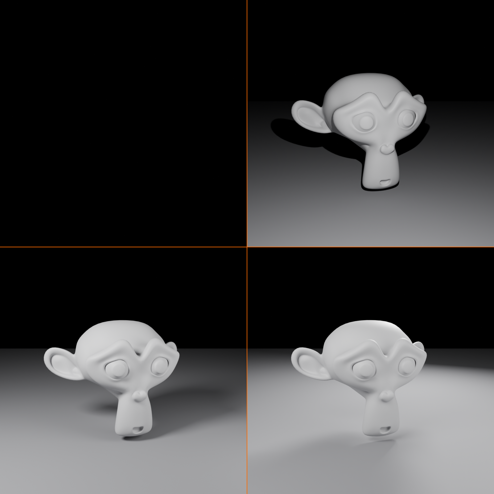
💡 The Photography Analogy: Think about how photographers obsess over lighting—they'll wait hours for the perfect light, use multiple light sources, and carefully control shadows. The same principles apply in 3D. You have even more control than a photographer because you can place lights anywhere, make them any color, and adjust them perfectly. Use that power wisely!
Lighting in the Real World vs. 3D
🌍 Understanding Light Behavior
Real-world light sources:
- The sun: Distant, parallel rays, incredibly bright
- Light bulbs: Point sources radiating in all directions
- Windows: Large area sources, soft diffused light
- Lamps/fixtures: Directional, often focused with reflectors
- Screens/monitors: Flat emissive surfaces
- Fire/candles: Warm, flickering point sources
In Blender:
- We simulate these real-world sources with virtual lights
- Four main light types to recreate any real lighting scenario
- Plus materials can emit light (emission shader)
- World/environment lighting for overall ambient illumination
Key light properties we'll control:
- Color: White, warm, cool, colored lights
- Intensity/Power: How bright the light is
- Position: Where the light comes from
- Direction: Where the light points (for some types)
- Size: Small (hard shadows) vs. large (soft shadows)
- Falloff: How light diminishes with distance
Hard vs. Soft Light
🔦 Shadow Quality Fundamentals
Hard light characteristics:
- Small or distant light source
- Sharp, well-defined shadows
- High contrast between light and shadow
- Dramatic, intense feeling
- Examples: Direct sunlight, small bare bulb, flashlight
Soft light characteristics:
- Large or diffused light source
- Gradual shadow edges (penumbra)
- Lower contrast, gentle transitions
- Flattering, natural feeling
- Examples: Overcast sky, window light, softbox, bounced light
The distance-size relationship:
- Same light appears harder when far from subject
- Same light appears softer when close to subject
- The sun is huge but appears hard because it's so far away
- A small lamp appears soft when very close
Choosing hard vs. soft:
- Use hard light for: Drama, focus, outdoor midday, product highlights
- Use soft light for: Portraits, even illumination, realism, gentle mood
- Mix both: Most professional setups use a combination
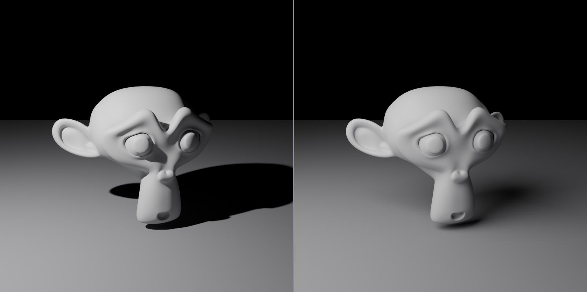
Light and Mood
🎭 Emotional Impact of Lighting
Color temperature and mood:
- Warm light (orange/yellow):
- Feelings: Cozy, comfortable, nostalgic, inviting
- Uses: Sunset, indoor scenes, intimate moments
- Color temperature: 2000K-3500K
- Neutral light (white):
- Feelings: Clean, professional, realistic, balanced
- Uses: Product shots, midday scenes, office environments
- Color temperature: 5000K-6500K
- Cool light (blue/cyan):
- Feelings: Cold, sterile, mysterious, futuristic
- Uses: Night scenes, sci-fi, clinical settings, moonlight
- Color temperature: 7000K-10000K
Direction and drama:
- Front lighting: Flat, even, reduces drama (think passport photo)
- Side lighting: Reveals texture, creates depth, dramatic
- Back lighting: Silhouettes, rim lighting, mysterious
- Top lighting: Natural, can be harsh or gentle
- Bottom lighting: Unnatural, spooky, theatrical
Contrast and intensity:
- High contrast: Dramatic, intense, film noir
- Low contrast: Gentle, soft, dreamy, ethereal
- Very bright: Energetic, positive, harsh
- Dim/low key: Mysterious, moody, intimate
✅ The Lighting Mindset
Approach lighting like a cinematographer:
- Ask: "What is this scene's story and mood?"
- Observe: Study real-world lighting constantly
- Simplify: Start with one light, add more only when needed
- Iterate: Lighting is an iterative process—adjust, test, refine
- Reference: Look at paintings, photographs, films for inspiration
- Purpose: Every light should have a reason to exist
🔬 Light Fundamentals
Before we dive into specific light types, let's understand the core concepts that apply to all lights in Blender. These fundamentals will help you make better lighting decisions.
Light Units and Measurements
📊 Understanding Light Power
Power units in Blender:
- Watts (W): Default unit, based on electrical power
- Real-world equivalent: A 60W incandescent bulb
- Good for intuitive understanding
- Range: 1W-10,000W+ depending on light type
- Lumens: Measure of total visible light output
- More accurate physically
- LED bulb equivalent: 800 lumens ≈ 60W incandescent
- Candelas: Intensity in a particular direction
- Used for directional lights
- Less common in practice
Practical power ranges:
- Point/Spot lights: 10W-1000W (typical scenes)
- Area lights: 100W-5000W (larger sources need more power)
- Sun light: 1-10 strength (dimensionless, different system)
- Interior scenes: Generally lower values (10-500W)
- Exterior scenes: Higher values or Sun light
Important note: These are starting points—your scene scale and materials will affect what works. Trust your eyes, not just numbers!
Light Falloff
📉 How Light Diminishes with Distance
Inverse square law (physics):
- Light intensity decreases with the square of distance
- Double the distance = 1/4 the brightness (not 1/2!)
- This is how real light behaves
- Creates natural-looking falloff
Falloff types in Blender:
- Inverse Square (default): Physically accurate, realistic
- Use for: Most realistic scenes
- Behavior: Rapid falloff close to light, gradual far away
- Linear: Uniform decrease with distance
- Use for: Stylized looks, special effects
- Behavior: Even, predictable falloff
- Constant: No falloff at all
- Use for: NPR (non-photorealistic) rendering, special cases
- Behavior: Same brightness regardless of distance
Why falloff matters:
- Creates depth and dimensionality
- Objects closer to light are brighter (obvious but important)
- Helps separate foreground from background
- Realistic falloff = realistic appearance
Light Color
🎨 Color Temperature and Tinting
Color temperature basics:
- Measured in Kelvin (K)
- Counter-intuitive: Lower K = warmer (more red/orange)
- Higher K = cooler (more blue)
- Default white light = 6500K (daylight)
Common color temperatures:
- 1800K-2000K: Candlelight, fire (very warm orange)
- 2700K-3000K: Incandescent bulbs, tungsten (warm yellow)
- 4000K-4500K: Fluorescent, neutral warm
- 5500K-6500K: Daylight, neutral white
- 7000K-10000K: Overcast sky, shade (cool blue)
- 15000K-27000K: Clear blue sky (very cool blue)
Setting color in Blender:
- RGB color picker: Choose any color directly
- Temperature slider: Some light settings show Kelvin value
- Hex values: Can input specific color codes
- White is not always white: Pure white (RGB 1,1,1) is neutral, but warm/cool whites are common
Colored lighting tips:
- Slight color tints (not pure colors) often look more realistic
- Use complementary colored lights (warm + cool) for visual interest
- Match light color to story/mood (blue = cold/night, orange = warm/sunset)
- Don't overdo it—subtle is usually better
Light Visibility and Rendering
👁️ Seeing Lights in Viewport and Render
Viewport display:
- Light objects show as wireframe icons (you can't see the light itself)
- Icon shape indicates light type
- Size of icon doesn't affect lighting (just visual reference)
- Change icon size: Properties → Light Data → Viewport Display → Size
Viewing light effects:
- Solid mode: Uses basic lighting (not accurate)
- Material Preview: Shows material response to lights (good for quick preview)
- Rendered mode: Shows actual render result (most accurate)
- Final render (F12): Full quality result
Light objects vs. light emission:
- Light objects: Specialized lights we're learning (Point, Sun, Spot, Area)
- Emissive materials: Materials that glow (emission shader)
- Any object can emit light via materials
- Less efficient than light objects
- Better for visible light sources (lamps, screens, neon signs)
⚠️ Render Engine Considerations
Eevee vs. Cycles lighting differences:
- Eevee (real-time):
- Approximates lighting for speed
- Requires shadow settings enabled per light
- Limited light bounces (indirect lighting)
- Good for previews and some final renders
- Cycles (ray tracing):
- Physically accurate light simulation
- Automatic shadows and reflections
- Full global illumination (light bounces)
- Slower but more realistic
This lesson applies to both engines, with notes where they differ.
➕ Adding Lights in Blender
Before we explore each light type, let's learn the basic workflow for adding and manipulating lights in Blender. These skills apply to all light types.
Creating Light Objects
🔦 Adding Your First Light
Basic add light workflow:
- Position 3D cursor (optional):
- Shift+Right-click to place cursor where you want light
- Or use Shift+S → Cursor to Selected
- New lights appear at cursor location
- Add light:
Shift+A→ Light → [Choose type]- Or: Top menu → Add → Light → [Choose type]
- Light appears at cursor:
- Automatically selected
- Ready to move, rotate, and configure
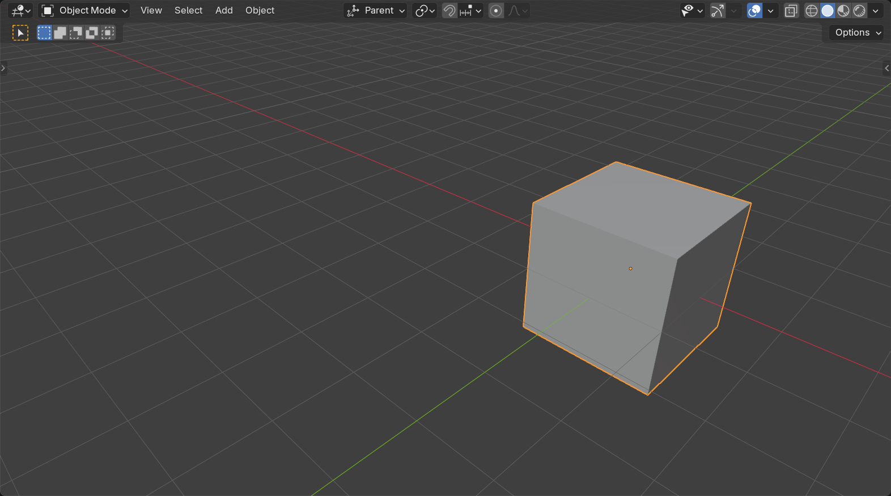
Quick tips:
- Default scene comes with one light (usually Point light)
- You can have unlimited lights in a scene
- More lights = longer render times (use wisely!)
- Name your lights descriptively: "Key_Light", "Rim_Light", etc.
Transforming Lights
🎯 Moving, Rotating, and Scaling Lights
Move light (G key):
- Select light →
G→ Move mouse → Click to confirm - Constrain to axis:
G→X/Y/Z - Precise movement:
G→ Type number → Enter - Important: Light position affects which objects it illuminates
Rotate light (R key):
- Select light →
R→ Move mouse → Click to confirm - Constrain rotation:
R→X/Y/Z - Matters for: Spot lights, Area lights (directional)
- Doesn't matter for: Point lights (omnidirectional), Sun lights (only rotation, not position)
Scale light (S key):
- For most lights: Scale affects icon size only (visual reference)
- For Area lights: Scale changes light size (affects shadow softness!)
- Scale icon:
S→ Move mouse → Click
Aim light at object:
- Select light → Shift+Select target object
Ctrl+T→ Track To Constraint- Light now follows the target object
- Useful for animated lights or keeping spotlight aimed
Accessing Light Properties
⚙️ Light Data Properties Panel
Where to find light settings:
- Select a light object
- Properties panel (right side) → Light Properties icon (light bulb)
- All light settings accessible here
Main sections in Light Properties:
- Light type dropdown: Change between Point/Sun/Spot/Area
- Color: Light color picker
- Power/Strength: Brightness control
- Specular/Diffuse: How light affects materials
- Shadow settings: Enable/disable, quality settings
- Custom Distance/Radius: Falloff control
- Type-specific settings: Changes based on light type
Quick panel (N-key sidebar):
- Press
Nin 3D Viewport to open sidebar - Item tab shows basic light properties
- Quick access without switching panels
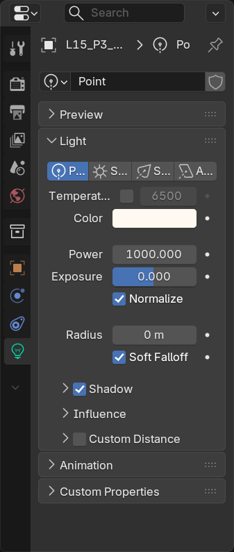
✅ Light Setup Workflow
Recommended approach for any scene:
- Start simple: Begin with one light (usually Area or Sun)
- Position for main lighting: Place where primary illumination comes from
- Check in Rendered view: Switch viewport shading to see actual effect
- Adjust power: Get overall brightness correct first
- Add lights one at a time: Each new light should have a purpose
- Name your lights: "Key", "Fill", "Rim", "Background" etc.
- Iterate: Lighting is never "done" on first try—keep refining!
💡 Point Light
The Point Light is the simplest light type—it radiates light equally in all directions from a single point in space, just like a bare light bulb. Let's master this foundational light type.
What is a Point Light?
🔆 Point Light Characteristics
Behavior:
- Emits light equally in all directions (omnidirectional)
- Single point source (infinitely small)
- Light spreads spherically outward from center
- No inherent direction (rotation doesn't matter)
Real-world equivalents:
- Bare incandescent bulb
- Candle flame
- Small LED without diffuser
- Star or distant point light source
Visual characteristics:
- Creates hard shadows (because it's a point source)
- Even illumination in all directions
- Falloff based on inverse square law
- Distinct "hot spot" directly around the light
When to use Point lights:
- Small light sources (candles, small bulbs)
- Accent lighting in scenes
- When you need omnidirectional illumination
- Quick placeholder lighting during modeling
- Stylized or game-style lighting
When NOT to use Point lights:
- When you want soft shadows (use Area instead)
- For realistic interior lighting (most real lights have some directionality)
- As primary/key light for product renders (too hard)
Point Light Settings
⚙️ Configuring Point Lights
Key parameters:
Color:
- Default: Pure white
- Adjust for mood: Warm (yellowish) for cozy, cool (bluish) for clinical
- Can use any color for stylized effects
Power (Watts):
- Default: 10W (quite dim)
- Typical range: 50W-500W for interior scenes
- Small scenes may need less (10-50W)
- Large scenes may need more (500W-5000W)
- Remember: Power needed depends on scene scale and distance to objects
Radius (Shadow Softness):
- Default: 0.25m (creates hard shadows)
- Increase radius → softer shadows
- Simulates physical size of light source
- Range: 0.01m (very hard) to 2m+ (very soft)
- Cycles only: Eevee always produces hard shadows from Point lights
Custom Distance:
- When enabled: Light stops affecting objects beyond this distance
- Default: OFF (infinite distance)
- Use to: Optimize performance, control which objects are lit
- Useful in scenes with many lights
Shadow settings (Eevee):
- Must enable "Shadow" checkbox for shadows in Eevee
- Clip Start: Minimum shadow distance (avoid self-shadowing artifacts)
- Bias: Prevents shadow acne (increase if you see black spots)
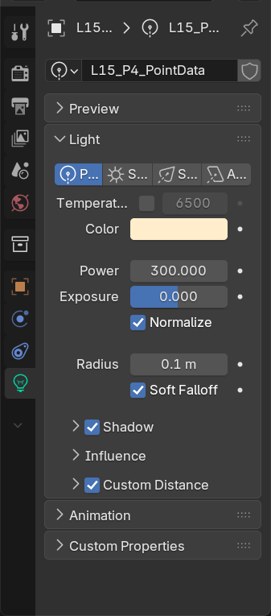
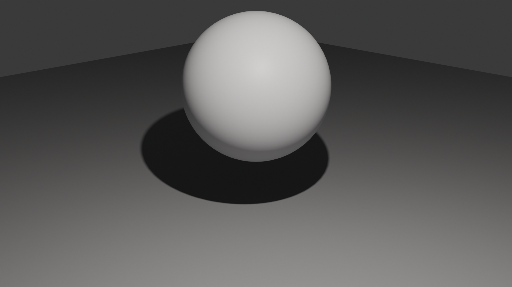
Practical Point Light Examples
🎯 Point Light in Action
Example 1: Candle lighting
- Setup: Point light at candle wick position
- Color: Warm orange (#FF9E4A or RGB 1.0, 0.62, 0.29)
- Power: 5-15W (candles are dim)
- Radius: 0.05-0.1m (small, hard-ish light)
- Custom Distance: Enable at 2-3m (candlelight doesn't reach far)
- Bonus: Add emission material to candle flame for realism
Example 2: Desk lamp
- Setup: Point light inside lamp shade
- Color: Slightly warm white (#FFFAF0)
- Power: 50-100W
- Radius: 0.15-0.25m
- Note: For more realistic lamp, use Area light instead
Example 3: Firefly/magical particle
- Setup: Small point light for glowing particle effect
- Color: Green, blue, or yellow (depending on effect)
- Power: 1-5W (very dim, just visible glow)
- Radius: 0.01-0.05m (tiny)
- Custom Distance: Enable at 0.5-1m (very short range)
Example 4: Accent/fill lighting
- Setup: Hidden point light to brighten dark areas
- Color: Match ambient/scene color temperature
- Power: Low (20-50W) to gently lift shadows
- Placement: Behind camera or in dark corners
- Purpose: Fill in shadows without creating obvious light source
Point Light Limitations
⚠️ Point Light Drawbacks
Hard shadows:
- Point lights create harsh, sharp shadows
- Rarely looks realistic for main lighting
- Radius parameter helps (Cycles) but Area lights are better
Lack of directionality:
- Light goes everywhere equally
- Can't control which way light points (unlike Spot/Area)
- Can cause unwanted illumination of background/ceiling
Not energy efficient:
- Lights all directions = wasted light in many scenarios
- More efficient to use directional lights (Spot, Area) when possible
Solutions:
- Use Area lights for softer, more realistic lighting
- Use Spot lights for directional control
- Reserve Point lights for specific use cases (candles, accents, small sources)
💡 Pro Tip: Point Light Workarounds
Making Point lights more realistic:
- Increase radius (Cycles) to soften shadows (0.5m-1m)
- Use custom distance to prevent over-illumination
- Lower power and place closer to subject (softer effect)
- Combine multiple Point lights at different positions for softer combined result
- Or just use Area lights instead for most realistic scenarios!
☀️ Sun Light
The Sun Light creates parallel light rays, simulating the sun or any infinitely distant light source. It's perfect for outdoor scenes and creating consistent directional lighting.
What is a Sun Light?
🌞 Sun Light Characteristics
Behavior:
- Emits parallel light rays in one direction
- Acts as infinitely distant light source
- Position doesn't matter (only rotation/direction matters!)
- Consistent brightness across entire scene
- No falloff with distance
Real-world equivalent:
- The sun: So far away that all rays appear parallel
- Moon: Same principle, though dimmer and cooler
- Any extremely distant light source
Visual characteristics:
- Sharp, parallel shadows
- Consistent shadow direction across scene
- Even lighting intensity (no hot spots)
- Strong sense of direction
When to use Sun lights:
- Outdoor scenes (primary light source)
- Simulating daylight through windows
- Any scenario with distant directional light
- When you need consistent lighting across large scenes
- Architectural visualization exteriors
When NOT to use Sun lights:
- Indoor scenes without windows
- Night scenes (unless for moonlight)
- When you need light falloff with distance
- Small, confined spaces
Sun Light Settings
⚙️ Configuring Sun Lights
Key parameters:
Strength (not Watts):
- Default: 1.0
- Dimensionless value (not Watts like other lights)
- Typical range: 0.5-5.0
- 0.5-1.0: Overcast day, soft outdoor light
- 1.0-2.0: Normal sunny day
- 2.0-5.0: Bright, harsh midday sun
- 0.1-0.5: Moonlight (with cool blue color)
Angle (Shadow Softness):
- Default: 0.526° (actual sun's angular size from Earth)
- Controls shadow softness
- 0° = perfectly hard shadows
- 0.526° = realistic sun shadows (slight softness)
- 2-5° = softer, more diffused shadows (overcast)
- Cycles only: Eevee doesn't use Angle parameter
Color:
- Morning/Evening sun: Warm orange (#FFAE42)
- Midday sun: Slightly warm white (#FFF8E7)
- Overcast day: Neutral cool white (#F0F8FF)
- Moonlight: Cool blue (#B0C4DE)
Rotation (Direction):
- Most important setting for Sun lights!
- Rotation determines light direction (position doesn't matter)
- Can rotate Sun icon to visualize direction
- Arrow on Sun icon points in light direction
- Tip: Use
Rkey to rotate,X/Y/Zto constrain axis
Sun Light Direction and Time of Day
🕐 Simulating Different Times
Morning sun (sunrise):
- Direction: Low angle from east (horizontal-ish)
- Color: Warm orange to yellow (#FF9E4A to #FFD700)
- Strength: 1.0-1.5
- Angle: 1-2° (softer than midday)
- Shadows: Long, dramatic shadows
Midday sun (noon):
- Direction: High angle from above (steep, nearly vertical)
- Color: Bright white with slight warm tint (#FFFEF0)
- Strength: 2.0-3.0 (brightest)
- Angle: 0.526° (realistic sun)
- Shadows: Short, directly below objects, harsh
Afternoon sun (golden hour):
- Direction: Low angle from west
- Color: Golden orange (#FFA500 to #FF8C00)
- Strength: 1.5-2.0
- Angle: 1-3° (softer, flattering)
- Shadows: Long, warm, golden quality
- Note: "Golden hour" is photographer's favorite time!
Dusk/twilight:
- Direction: Very low angle, almost at horizon
- Color: Deep orange to purple gradient (#FF6B35 fading to #4A4E69)
- Strength: 0.5-1.0 (dim)
- Angle: 3-5° (very soft)
- Shadows: Very long, fading into ambient
Overcast day:
- Direction: From above (but use HDRI instead for most realism)
- Color: Neutral to cool white (#E8F1F5)
- Strength: 0.5-1.0 (diffused)
- Angle: 5-10° (very soft shadows)
- Better approach: Use HDRI environment instead of Sun for overcast
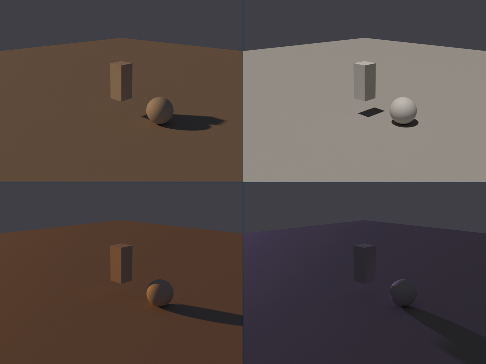
Practical Sun Light Examples
🎯 Sun Light in Action
Example 1: Outdoor product shot (midday)
- Sun rotation: 45° angle from above and side
- Color: Slightly warm white (#FFFEF5)
- Strength: 2.0
- Angle: 0.526° (realistic sun)
- Add: Slight blue-tinted fill light from opposite side (sky reflection)
Example 2: Architectural exterior (golden hour)
- Sun rotation: Low angle, 15-20° above horizon
- Color: Warm golden orange (#FFB347)
- Strength: 1.8
- Angle: 2° (softer golden hour shadows)
- Bonus: Add warm HDRI for ambient/sky light
Example 3: Indoor scene with window light
- Sun rotation: Aimed through window opening
- Color: White to slightly warm
- Strength: 1.5-2.5 (strong directional light)
- Angle: 1-3° (slightly soft through atmosphere)
- Result: Dramatic shafts of light through window
Example 4: Moonlight scene
- Sun rotation: High angle (moon overhead) or low (moon at horizon)
- Color: Cool blue (#A0B8D0)
- Strength: 0.2-0.5 (moon is very dim compared to sun)
- Angle: 0.5° (moon is similar size to sun in sky)
- Important: Add very low ambient/environment light for night realism
✅ Sun Light Best Practices
- Position doesn't matter: You can place Sun anywhere (only rotation counts)
- Combine with environment: Sun + HDRI = most realistic outdoor lighting
- Watch your shadows: Shadows reveal sun direction—make it make sense!
- Don't use alone indoors: Add fill lights to prevent pitch-black shadows
- Match color to time of day: Color sells the time more than strength
- Rotate, don't move: Use
Rkey to aim, ignoreGkey
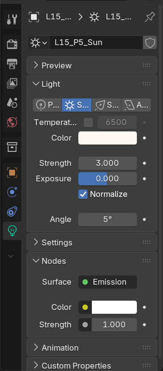
💡 The Infinite Distance Insight: The Sun light's "position doesn't matter" behavior might seem weird at first, but it makes perfect sense! The real sun is 93 million miles away, so whether you're standing here or 10 feet over there, the sun's rays hit you at the exact same angle—they're parallel. Blender's Sun light works the same way. Think of it as an infinite grid of parallel arrows all pointing the same direction, extending across your entire scene.
🔦 Spot Light
The Spot Light creates a cone of directional light, perfect for theatrical lighting, flashlights, stage spotlights, and any scenario where you need focused, controllable illumination.
What is a Spot Light?
🎯 Spot Light Characteristics
Behavior:
- Emits light in a cone shape from a point
- Highly directional (like a flashlight or stage spotlight)
- Both position AND rotation matter
- Has adjustable cone angle (spread)
- Can have soft or hard edges on cone
Real-world equivalents:
- Flashlight or torch
- Stage spotlight
- Car headlights
- Desk lamp with focused beam
- Track lighting or recessed ceiling lights
- Search light or lighthouse beam
Visual characteristics:
- Circular pool of light on surfaces
- Defined beam with falloff at edges
- Can create hard or soft shadows
- Strong sense of direction and focus
- Dramatic, theatrical quality
When to use Spot lights:
- Product photography (highlighting specific areas)
- Stage/theatrical lighting
- Simulating practical lights (lamps, flashlights)
- Focusing attention on specific objects/areas
- Creating dramatic, moody lighting
- Controlling exactly where light goes
When NOT to use Spot lights:
- General ambient lighting (too focused)
- Outdoor daylight (use Sun instead)
- When you need omnidirectional light (use Point or Area)
- Soft, flattering portrait lighting (use Area lights instead)
Spot Light Settings
⚙️ Configuring Spot Lights
Core parameters:
Power (Watts):
- Similar to Point lights in concept
- Typical range: 50W-2000W
- 50-200W: Desk lamp, accent light
- 200-500W: Strong product lighting
- 500-2000W: Stage spotlight, dramatic effect
- Focused beam = more concentrated light = can use lower power
Spot Size (Cone Angle):
- Controls the width of the light cone
- Measured in degrees (0-180°)
- Default: 45° (moderate cone)
- Common values:
- 15-30°: Narrow beam, tight spotlight
- 45-60°: Medium beam, general use
- 70-90°: Wide beam, flood light
- 120-180°: Very wide, approaching omnidirectional
- Tip: Narrower beam = more dramatic, wider = more coverage
Blend (Edge Softness):
- Controls how soft/hard the edge of the light cone is
- Range: 0.0 to 1.0
- 0.0 = Hard edge (sharp cutoff)
- 0.5 = Moderate blend (gradual transition)
- 1.0 = Very soft edge (gentle fadeout)
- Visual effect: High blend = softer, more realistic; Low blend = theatrical, dramatic
Radius (Shadow Softness):
- Same as Point light radius
- Simulates physical size of light source
- Affects shadow softness (Cycles only)
- Default: 0.25m
- Increase for softer shadows (0.5m-2m)
Show Cone:
- Viewport display option
- When enabled: Shows light cone visualization in viewport
- Helps you see where light is pointing
- Doesn't affect render, only viewport display
- Very useful for aiming spot lights!
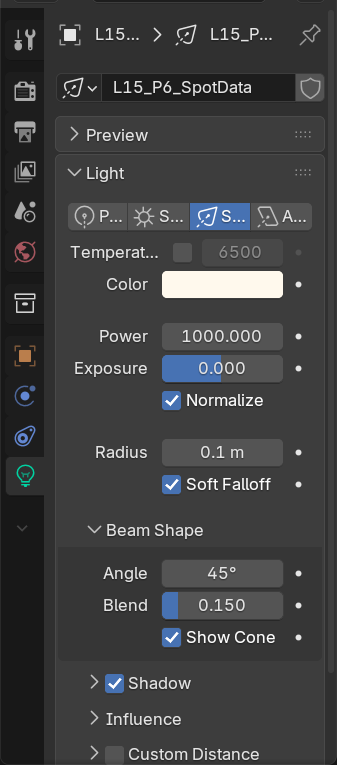
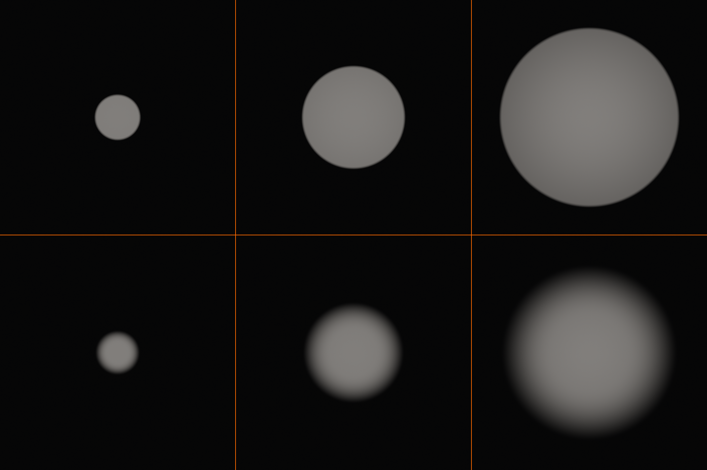
Aiming and Positioning Spot Lights
🎯 Getting the Perfect Aim
Basic aiming:
- Spot light points in its local -Z direction (down its cone)
- Rotate light to aim:
Rkey - Enable "Show Cone" to see where it's pointing
- Arrow on spot icon points in light direction
Precise aiming workflow:
- Position light:
Gto move where you want it - Select target: Select object you want to illuminate
- Switch back to light: Select light again
- Aim at target:
- Keep light selected, Shift+Select target object
Ctrl+T→ Track To Constraint- Light now aims at target automatically
- Or manual aim: Select light →
Rto rotate until aimed correctly
Classic three-point lighting positions for Spot lights:
- Key light: 45° angle from front-side, slightly above subject
- Fill light: Opposite side from key, lower intensity
- Rim/back light: Behind subject, creating edge highlight
- (We'll cover three-point lighting in detail in Lesson 16!)
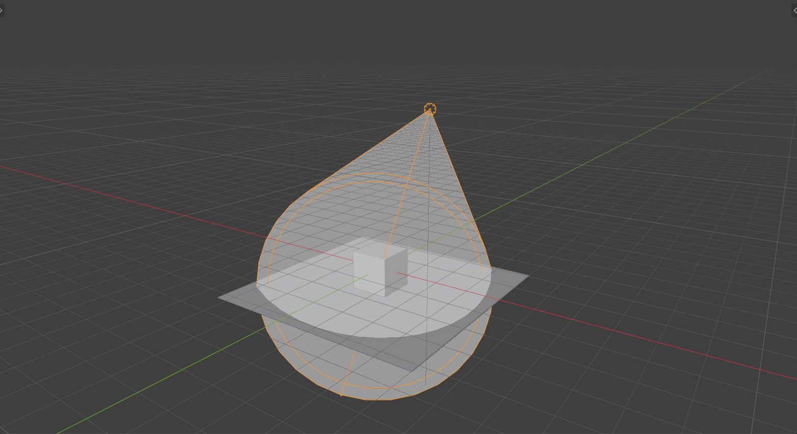
Spot Light Patterns and Effects
🎨 Creative Spot Light Techniques
Gobo patterns (light shaping):
- What's a gobo? Pattern placed in light path (like a stencil)
- In Blender: Use texture to shape light
- How to create:
- Select Spot light → Light Properties
- Scroll to bottom → check "Use Nodes"
- Open Shader Editor (with light selected)
- Add Image Texture node
- Load black & white pattern image (white = light, black = blocked)
- Connect: Image Texture Color → Emission Strength
- Examples: Window shadows, leaf patterns, geometric shapes, logos
Volumetric beams (visible light rays):
- Makes the spot light beam itself visible (like dust in light)
- In Eevee:
- Render Properties → Volumetrics: Enable
- World Properties → Volume → Add Principled Volume
- Spot light beam now visible in render
- In Cycles:
- Add Volume Scatter node to World or objects
- Automatically shows light scattering
- Great for: Theatrical effects, dusty environments, underwater scenes
Light cookies (projection mapping):
- Project images or patterns through spot light
- Like a slide projector effect
- Use same technique as gobo (texture in light shader)
- Can project logos, text, images onto surfaces
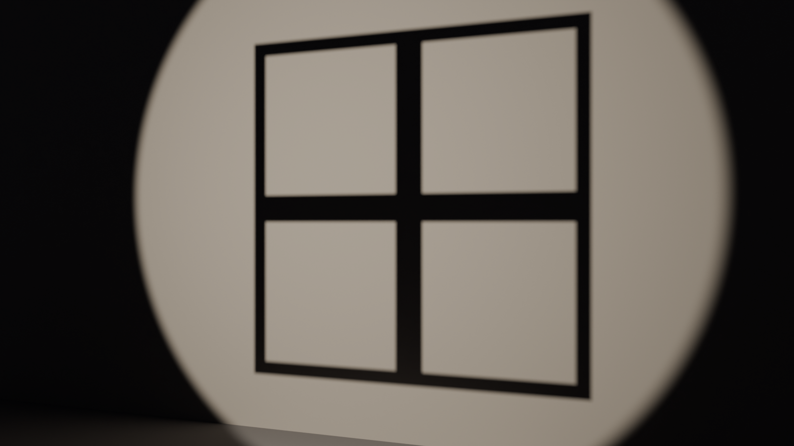
Practical Spot Light Examples
💡 Spot Light in Action
Example 1: Product spotlight
- Position: 45° above and to side of product
- Rotation: Aimed at product center
- Power: 300-500W
- Spot Size: 45-60° (enough to cover product plus slight spill)
- Blend: 0.3-0.5 (moderate soft edge)
- Radius: 0.5m (softens shadows slightly)
- Color: Neutral white or slightly warm
Example 2: Desk lamp simulation
- Position: Inside lamp shade model
- Rotation: Pointing down toward desk surface
- Power: 100-200W
- Spot Size: 70-90° (wide spread for desk coverage)
- Blend: 0.6-0.8 (soft, diffused by shade)
- Color: Warm white (#FFFAF0)
- Bonus: Add Point light at bulb position for extra realism
Example 3: Stage performer spotlight
- Position: High above and angled down
- Rotation: Aimed at performer/stage center
- Power: 1000-2000W (bright, dramatic)
- Spot Size: 20-35° (tight beam, focused attention)
- Blend: 0.2-0.4 (defined beam edge, theatrical)
- Color: White or colored gel (blue, red, yellow)
- Extra: Enable volumetrics to see beam in air
Example 4: Window light fake (cheating interior lighting)
- Position: Outside window, aimed through opening
- Rotation: Angled down into room (sun angle)
- Power: 500-1000W
- Spot Size: 60-80° (wide enough to cover window area)
- Blend: 0.7-0.9 (very soft, diffused)
- Radius: 1-2m (large, soft shadows)
- Color: Slightly cool white (sky light)
- Note: Area light is often better for this, but Spot works in a pinch
Example 5: Flashlight effect
- Position: At flashlight location (in character's hand)
- Rotation: Aimed where character looks
- Power: 200-400W
- Spot Size: 40-50° (realistic flashlight beam)
- Blend: 0.3-0.5
- Color: Slightly cool white (LED flashlight) or warm (old flashlight)
- Bonus: Parent light to character's hand for animated flashlight
✅ Spot Light Best Practices
- Enable "Show Cone": Makes aiming much easier in viewport
- Start with moderate settings: 45° spot size, 0.5 blend, then adjust
- Use Track To constraint: For lights that need to follow objects
- Don't overuse: Too many spot lights = messy, competing beams
- Match cone size to need: Narrow for drama, wide for coverage
- Blend is your friend: Higher blend = more realistic, lower = more theatrical
- Consider Area lights: For soft, realistic lighting, Area lights often work better
⚠️ Common Spot Light Mistakes
- Forgetting to aim: Spot light rotates with default orientation, might not point where you think!
- Too narrow spot size: 15° looks dramatic but often misses parts of subject
- Zero blend: Hard cone edges rarely look realistic (except for theatrical scenes)
- Too many spots: 5+ spot lights = confusing, overlapping beams (simplify!)
- Wrong power: Spot lights concentrate light, may need less power than you think
- Not testing angles: Small rotation changes big effect—test different angles!
⬜ Area Light
The Area Light is the most versatile and realistic light type—it emits light from a flat surface, creating beautiful soft shadows and realistic illumination. This is the professional's choice for most studio and product lighting.
What is an Area Light?
💎 Area Light Characteristics
Behavior:
- Emits light from a rectangular or other shaped surface
- Has physical size (not a point source)
- Produces soft, realistic shadows
- Directional—emits from one side of the plane
- Both position, rotation, AND size matter
Real-world equivalents:
- Softbox (photography/studio lighting)
- Window with diffused light
- LED panel lights
- Ceiling light panels
- Computer/TV screens
- Any large, flat light-emitting surface
Visual characteristics:
- Soft, gradual shadows (most realistic!)
- Even, flattering illumination
- Gentle falloff and transitions
- Professional, studio-quality look
- Can wrap around subjects naturally
When to use Area lights:
- Product photography and visualization
- Portrait/character lighting
- Studio setups and professional renders
- Interior lighting (windows, ceiling lights)
- Whenever you want soft, realistic shadows
- Default choice for most realistic lighting!
When NOT to use Area lights:
- When you specifically want hard shadows (use Point or Sun)
- Tight spotlight effects (use Spot light)
- When render time is critical (Area lights are slower)
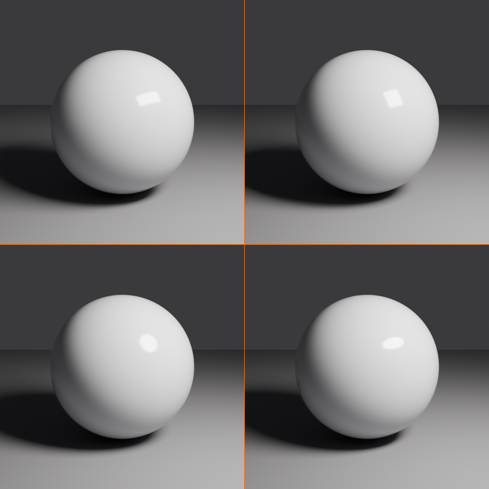
Area Light Settings
⚙️ Configuring Area Lights
Core parameters:
Power (Watts):
- Area lights typically need higher power than Point lights
- Light spreads over surface area instead of radiating from point
- Typical range: 100W-5000W
- 100-500W: Small area light, soft fill
- 500-1500W: Medium area, main light source
- 1500-5000W: Large area, bright key light
- Larger area = may need more power for same brightness
Shape:
- Rectangle (default): Most common, versatile
- Two size parameters: X and Y
- Can be square (1:1) or rectangular (e.g. 2:1)
- Best for: Studio lights, windows, general use
- Square: Equal dimensions, single size parameter
- Simpler to control (one size value)
- Best for: Symmetrical lighting, ceiling panels
- Disk: Circular shape
- Creates circular highlights (instead of rectangular)
- Best for: Softboxes with round diffusers, porthole lights
- Ellipse: Oval shape
- Two size parameters for oval dimensions
- Best for: Specialized strip lights, creative effects
Size (Most Important!):
- Controls shadow softness directly
- Larger area = softer shadows
- Smaller area = harder shadows
- Measured in meters (or Blender units)
- Common sizes:
- 0.5m-1m: Small, moderately soft
- 2m-4m: Medium, very soft (typical studio softbox)
- 5m-10m: Large, ultra-soft (window light, big studio)
- The soft shadow rule: Bigger relative to subject = softer shadows
Spread (Eevee only):
- Controls light cone angle (similar to Spot light)
- Default: 180° (hemisphere, full spread)
- Lower values: More focused beam
- Cycles: Always 180° spread (can't adjust)
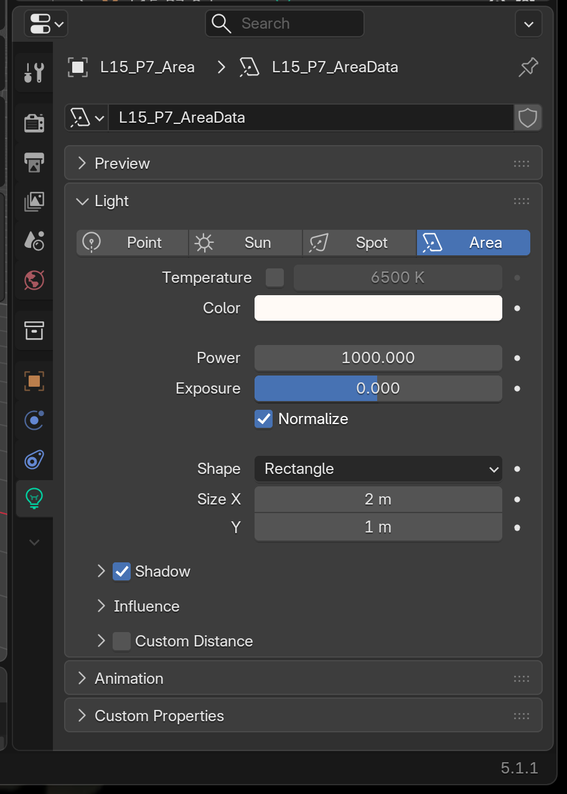
Area Light Size and Shadow Softness
📏 The Size-Softness Relationship
Understanding soft shadows:
- Shadow softness depends on light size relative to subject
- Same area light appears softer when closer, harder when farther
- Large area light = each point on surface emits light = shadows blend = soft
- Small area light = approaches point source = sharp shadows
The portrait photography analogy:
- Small softbox (1m) at 3m distance: Moderate softness
- Same softbox at 1m distance: Very soft (larger relative to subject)
- Large softbox (3m) at 3m distance: Very soft
- Same large softbox at 10m distance: Harder (smaller relative to subject)
Practical size guidelines:
- Portrait/character lighting: 2-4m area light at 3-5m distance
- Small product: 1-2m area light at 1-2m distance
- Large product/scene: 4-8m area light at 5-10m distance
- Window simulation: Match actual window size (2m x 3m typical)
Testing shadow softness:
- Place simple object (cube/sphere) in scene
- Add area light aimed at object
- Look at shadow on ground/wall
- Increase area size → softer shadow
- Move light closer → softer shadow
- Move light farther → harder shadow
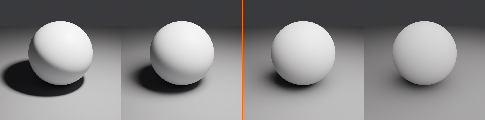
Positioning and Aiming Area Lights
🎯 Area Light Placement
Direction and orientation:
- Area lights emit from one side of the plane only
- The "front" side emits light (check arrow in viewport)
- Rotate to aim: Light emits in local -Z direction (perpendicular to plane)
- Tip: Think of it as a wall that glows on one side
Classic studio placement:
- Key light (main light):
- 45° to side of subject, slightly above
- Largest/brightest area light
- Size: 3-5m for soft shadows
- Creates primary modeling/dimension
- Fill light (shadow softener):
- Opposite side from key, lower power
- Lifts shadows without creating own shadow
- Size: Can match key or be larger
- Power: 30-50% of key light
- Rim/back light (separation):
- Behind subject, aimed at edges
- Can be smaller (1-2m) for defined highlights
- Creates separation from background
Scale trick for fast positioning:
- Scale area light (
Skey) to adjust size quickly - Or use Size parameter in properties for precision
- Remember: You can scale non-uniformly (
S→XorY)
Practical Area Light Examples
💡 Area Light in Action
Example 1: Product photography setup
- Key light:
- Shape: Rectangle or Square
- Size: 3m x 3m
- Position: 45° front-right, 2m above product
- Power: 800W
- Color: Neutral white
- Fill light:
- Size: 4m x 4m (larger, softer)
- Position: 45° front-left, same height
- Power: 300W (less than key)
- Rim light:
- Size: 1m x 2m (smaller, defined edge)
- Position: Behind product, aimed at edges
- Power: 400W
Example 2: Portrait lighting (beauty/glamour)
- Main light (key):
- Shape: Square or Rectangle
- Size: 4m x 4m (large, flattering)
- Position: Slightly above eye level, 30° to side
- Distance: 2-3m from subject
- Power: 1000W
- Color: Slightly warm white
- Fill:
- Size: 5m x 5m (even larger)
- Position: Opposite side from key
- Power: 400W (gentle fill)
- Hair light:
- Shape: Rectangle (1m x 3m strip)
- Position: Above and behind, aimed at hair
- Power: 500W
Example 3: Interior window light
- Window area light:
- Shape: Rectangle
- Size: 2m x 3m (typical window)
- Position: At window location, pointing inward
- Power: 2000-4000W (strong daylight)
- Color: Slightly cool white (sky light)
- Rotation: Angled down 15-30° (sun angle)
- Result: Soft, natural-looking window illumination
Example 4: Ceiling panel light
- Setup:
- Shape: Rectangle or Square
- Size: 1m x 1m to 2m x 4m (depending on ceiling fixture)
- Position: Ceiling height, pointing down
- Power: 500-1500W
- Color: Cool white (fluorescent) or neutral
- Array for office: Duplicate multiple panels in grid pattern
Example 5: Monitor/screen glow
- Setup:
- Shape: Rectangle (match screen aspect ratio, e.g. 16:9)
- Size: Match actual screen size (0.5m x 0.3m for laptop)
- Position: At screen location, pointing out
- Power: 50-150W (screens are dim)
- Color: Cool blue-white (#E0F0FF)
- Bonus: Animate power for screen flicker effect
✅ Area Light Best Practices
- Start with Area lights: They're the most versatile and realistic
- Size matters most: Adjust size before tweaking power
- Bigger = softer: Use large areas (3m+) for beautiful soft shadows
- Closer = softer: Move light closer for ultra-soft effect
- Match real world: If simulating window, make it window-sized
- Rectangle is versatile: Can be square (1:1) or strip (4:1) or anything between
- Check all angles: Rotate viewport to see how shadows look from different views
- Don't be afraid to go big: 5m-10m area lights create gorgeously soft light
⚠️ Area Light Performance Note
Area lights are slower to render than other types:
- Renderer must calculate light from entire surface (not just a point)
- Larger area = more samples needed = longer render
- In Cycles: Increases noise, needs more samples
- In Eevee: Generally fast, but still slower than Point/Spot
Optimization tips:
- Use fewer, larger area lights instead of many small ones
- Disable area lights outside camera view
- Use render layers to render lights separately if needed
- Accept slightly longer renders for much better quality!
💡 The Softbox Revelation: Professional photographers spend thousands of dollars on large softboxes for one reason: soft light is beautiful light. The larger the light source relative to your subject, the softer and more flattering the result. In Blender, you get infinite softboxes for free—make them huge! A 10-meter area light costs you nothing but render time, and the results are stunning. Don't be shy about using massive area lights.
⚙️ Common Light Properties
All light types share some common properties that give you fine-tuned control over how they behave. Let's explore these universal settings that apply across Point, Sun, Spot, and Area lights.
Diffuse and Specular
🎨 Controlling Light Contribution
What these do:
- Diffuse: Controls how much light affects matte/diffuse surfaces
- Specular: Controls how much light creates reflections/highlights
- Both default to 1.0 (full contribution)
- Can be adjusted from 0.0 (none) to 1.0+ (enhanced)
Understanding the split:
- Diffuse lighting: The overall color/brightness of a surface (matte appearance)
- Specular lighting: Shiny highlights and reflections (glossy appearance)
- Most materials have both components
- Separating them gives creative control
When to adjust:
- Reduce Specular (0.3-0.5):
- Light provides illumination but minimal highlights
- Good for fill lights (you don't want competing highlights)
- Prevents overly shiny look
- Increase Specular (1.5-2.0):
- Enhance reflections and highlights
- Make metals pop more
- Create dramatic gleaming effects
- Reduce Diffuse:
- Light affects highlights but not overall color (rare use)
- Good for rim/edge lights that shouldn't brighten overall scene
Practical examples:
- Fill light setup: Diffuse: 1.0, Specular: 0.2
- Brightens shadows without creating distracting highlights
- Highlight light: Diffuse: 0.3, Specular: 2.0
- Creates strong reflections without brightening matte surfaces much
- Standard key light: Diffuse: 1.0, Specular: 1.0
- Balanced, natural contribution
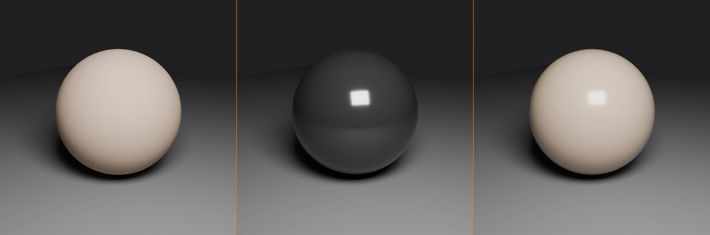
Volume Settings
🌫️ Light Interaction with Volume
What is Volume?
- Volumetric effects = visible light scattering in air/fog/smoke
- Makes light beams themselves visible (not just what they illuminate)
- Like dust particles revealing sunbeams
Volume Scatter:
- Default: 1.0 (light fully participates in volume rendering)
- Controls how much this light affects volumetric effects
- Set to 0.0: Light illuminates surfaces but doesn't create visible beams
- Set to 1.0+: Light strongly visible in fog/atmosphere
When to use:
- Visible light beams: Spot lights through fog, god rays, light shafts
- Atmospheric scenes: Dusty rooms, underwater, smoky environments
- Disable for cleanliness: Set to 0 when you don't want visible beams cluttering scene
Setting up volumetrics:
- Eevee:
- Render Properties → Volumetrics: Check "Volumetric Lighting"
- World Properties → Volume → Add Principled Volume node
- Adjust Density (0.001-0.1 typically)
- Cycles:
- Add volume to World or specific objects
- Volume Scatter or Principled Volume
- Automatically interacts with lights
Shadow Settings
👥 Shadow Control
Shadow Enable/Disable:
- Each light can have shadows turned on or off
- Eevee: Must explicitly enable shadows per light (checkboxes)
- Cycles: Shadows automatically enabled (can disable for optimization)
Contact Shadow (Eevee only):
- Adds subtle shadows in crevices and contact points
- Improves realism by preventing "floating" appearance
- Separate from main shadow system
- Enable in Light Properties → Shadow → Contact Shadows
- Adjust Distance (how far shadows extend) and Bias (softness)
Shadow settings (Eevee):
- Clip Start: Minimum distance for shadows
- Prevents self-shadowing artifacts
- Increase if you see shadow acne (black spots on surfaces)
- Default: 0.05m, increase to 0.1-0.5m if problems occur
- Bias: Shadow offset to prevent artifacts
- Higher bias = fewer artifacts but shadows may detach from objects
- Lower bias = more accurate shadows but possible artifacts
- Default: 1.0, adjust 0.5-2.0 as needed
When to disable shadows:
- Fill lights (shadows would compete with key light)
- Rim/edge lights (often want pure highlights without shadows)
- Background lights (illuminating backdrop only)
- Performance optimization (fewer shadow-casting lights = faster)
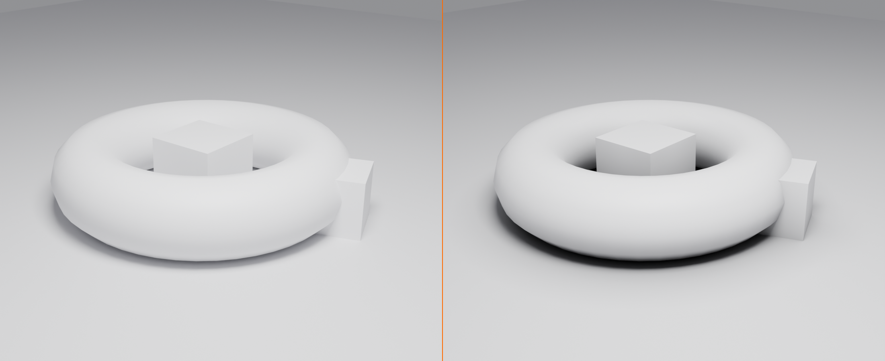
Custom Distance
📏 Limiting Light Range
What it does:
- Sets maximum distance light can travel
- Beyond this distance, light has zero effect
- Default: OFF (infinite range)
Why use it:
- Performance: Reduce calculations for objects far from light
- Artistic control: Prevent lights from affecting distant objects
- Localized lighting: Keep light confined to specific area
- Realism: Real small lights don't illuminate entire rooms
How to set:
- Light Properties → Custom Distance: Enable checkbox
- Distance slider appears (meters)
- Sphere visualization shows range in viewport (when light selected)
Practical uses:
- Candle light: 2-3m range (candles are weak)
- Desk lamp: 3-5m range (local illumination)
- Accent lights: 1-2m range (highlight specific object)
- Room lights: 10-15m range (illuminate room but not beyond)
Interaction with falloff:
- Light still follows inverse square falloff within range
- At custom distance limit: Light abruptly cuts to zero
- Creates visible boundary if distance is too short
- Tip: Set distance generous enough that falloff looks natural
Multiple Importance Sampling (Cycles)
🎯 Advanced Render Optimization
What is MIS?
- Multiple Importance Sampling = smarter light calculation
- Helps Cycles render challenging lighting more efficiently
- Reduces noise from large area lights
- Cycles-only feature (not in Eevee)
When to enable:
- Large area lights causing noise/fireflies
- Complex scenes with multiple lights
- When using emissive materials as light sources
- Default: Usually ON, leave it on
MIS settings:
- Found in Light Properties (Cycles render engine)
- Checkbox: Enable/disable
- Usually leave enabled unless you have specific reason to turn off
- Minimal performance cost, significant noise reduction
⚖️ Comparing Light Types
Now that we've covered all four light types in detail, let's directly compare them to help you choose the right light for any situation.
Quick Comparison Table
📊 Light Types at a Glance
| Feature | Point | Sun | Spot | Area |
|---|---|---|---|---|
| Direction | Omni-directional | Parallel rays | Cone shape | Planar direction |
| Shadow Quality | Hard (sharp) | Hard (parallel) | Hard-Medium | Soft (realistic) |
| Falloff | Inverse square | No falloff | Inverse square | Inverse square |
| Position Matters | Yes | No | Yes | Yes |
| Rotation Matters | No | Yes | Yes | Yes |
| Size Control | Radius only | Angle only | Radius + Cone | Physical size |
| Best For | Small sources, accents | Outdoor, distant light | Focused, theatrical | Realistic, studio |
| Render Speed | Fast | Fast | Fast | Slower |
| Realism | Low-Medium | High (outdoors) | Medium | Highest |
Decision Tree: Which Light to Use?
Light Type Strengths and Weaknesses
💪 Point Light
Strengths:
- Simple and easy to understand
- Fast to render
- Good for small, omnidirectional sources
- Perfect for candles, bulbs, particles
Weaknesses:
- Hard shadows (rarely realistic)
- No directional control
- Lights everything equally (wasteful)
- Less professional looking than Area lights
When to choose: Small light sources, accents, placeholders, stylized scenes
☀️ Sun Light
Strengths:
- Perfect for outdoor lighting
- Consistent across entire scene
- Position-independent (easy to work with)
- Fast to render
- Creates realistic outdoor shadows
Weaknesses:
- Only one direction (no falloff)
- Hard shadows (can be too harsh)
- Not suitable for indoor scenes
- Limited creative control
When to choose: Outdoor scenes, distant directional light, architectural exteriors, daylight
🔦 Spot Light
Strengths:
- Excellent directional control
- Adjustable cone angle and softness
- Good for focused, dramatic lighting
- Can create patterns (gobos)
- Theatrical and cinematic
Weaknesses:
- Can look artificial if overused
- Requires careful aiming
- Hard shadows (unless increased radius)
- Can create competing light cones
When to choose: Theatrical lighting, flashlights, focused highlights, stage setups, practical lights
⬜ Area Light
Strengths:
- Most realistic shadows (soft, natural)
- Excellent for studio and portrait lighting
- Highly controllable (size, shape, direction)
- Professional quality results
- Most versatile overall
Weaknesses:
- Slower to render than other types
- More parameters to manage (can be complex)
- Requires understanding of size/softness relationship
When to choose: Product shots, portraits, studio setups, realistic lighting, windows, whenever quality matters most
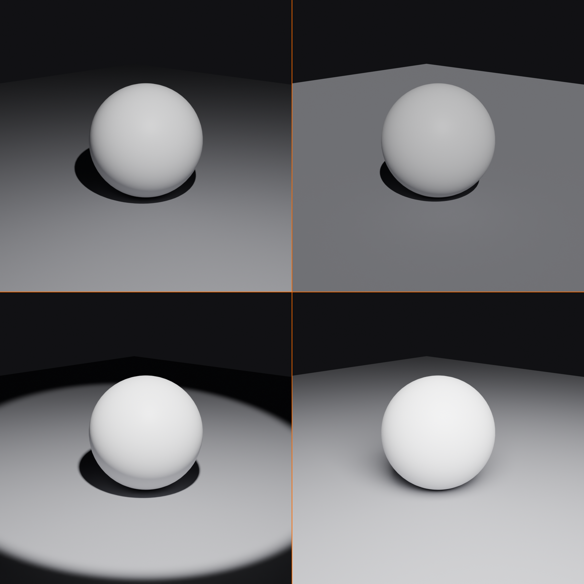
Common Lighting Combinations
🎨 Effective Multi-Light Setups
Product visualization:
- 1x Large Area light (key, 3m+)
- 1x Large Area light (fill, opposite side)
- 1x Small Area or Spot (rim/edge highlight)
- Total: 3 lights
Outdoor architectural:
- 1x Sun light (main illumination)
- HDRI environment (ambient/sky light)
- Optional: Area light for window interiors
- Total: 1-2 lights + HDRI
Interior scene:
- 1-2x Area lights (windows)
- 2-4x Point or Spot lights (practical lamps)
- 1x Area light (bounce/ambient fill)
- Total: 4-7 lights
Portrait/character:
- 1x Large Area light (key light, main)
- 1x Large Area light (fill light, soften shadows)
- 1x Medium Area or Spot (rim/hair light)
- Optional: Area or Point for background
- Total: 3-4 lights
Cinematic/moody:
- 1x Spot light (dramatic key)
- 1x Dim Area or Point (subtle fill)
- 1x Spot or Area (rim/separation)
- Total: 3 lights (keep it simple for drama)
✅ General Lighting Principles
- Start simple: Begin with one light, add more only as needed
- Every light needs purpose: Key, fill, rim, accent—know why each light exists
- Fewer is often better: 3-5 well-placed lights beat 10 random ones
- Area lights are safe default: When in doubt, use Area lights
- Match to scenario: Outdoor = Sun, Studio = Area, Theatrical = Spot
- Test different angles: Small rotation/position changes = big effect
- Consider render time: Area lights look best but render slowest
🎬 Practical Lighting Scenarios
Let's apply everything we've learned to real-world scenarios. These practical examples show you exactly which lights to use and how to set them up for common situations you'll encounter.
Scenario 1: Product Photography Setup
📦 Professional Product Lighting
Goal: Clean, professional product shot with soft shadows and even illumination
Setup:
- Key Light (Main):
- Type: Area Light (Rectangle or Square)
- Size: 3m x 3m
- Position: 45° to front-right, 30° above horizontal
- Distance: 3-4m from product
- Power: 800-1200W
- Color: Neutral white (#FFFFFF)
- Purpose: Primary illumination and modeling
- Fill Light:
- Type: Area Light (Rectangle)
- Size: 4m x 4m (larger = softer)
- Position: 45° to front-left, same height as key
- Distance: 3-4m from product
- Power: 400-500W (about 40% of key)
- Color: Same as key or slightly cool
- Purpose: Soften shadows, reduce contrast
- Shadow: Disabled (no competing shadows)
- Rim Light:
- Type: Area Light (Rectangle, 1m x 2m) or Spot
- Position: Behind product, 30-45° from directly behind
- Aimed: At product edges
- Power: 500-800W
- Color: White or slightly warm for gold edge
- Purpose: Separation from background, edge definition
- Background Light (Optional):
- Type: Area Light or Spot
- Position: Behind product, aimed at backdrop
- Power: 300-600W
- Purpose: Create gradient on background, separation
Camera setup:
- Position: Front and center of product
- Angle: Slightly above product (10-20°)
- Focal length: 50-100mm (avoid distortion)
Pro tips:
- Keep key light larger than product for soft shadows
- Fill light should never overpower key (keep dimmer)
- Rim light creates premium, professional look
- Adjust key-to-fill ratio for different moods (high contrast = dramatic)
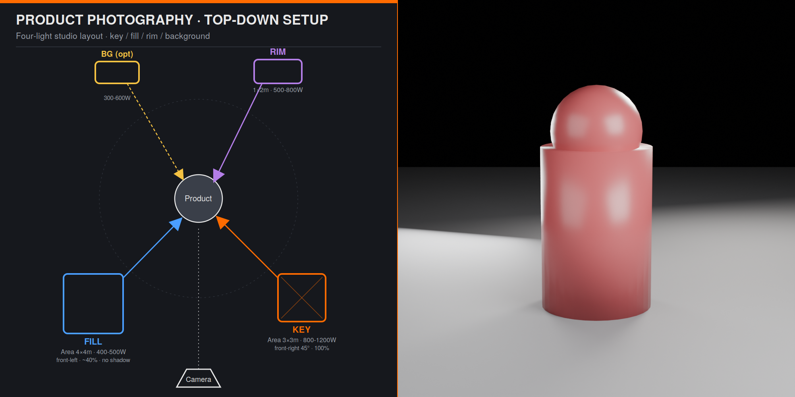
Scenario 2: Outdoor Architectural Exterior
🏛️ Daytime Architectural Visualization
Goal: Realistic outdoor building visualization with natural daylight
Setup:
- Sun Light (Primary):
- Type: Sun Light
- Rotation: 30-45° angle from horizon (afternoon sun)
- Direction: From side for modeling, not straight on
- Strength: 1.5-2.5
- Color: Slightly warm white (#FFF8E7) for pleasant afternoon
- Angle: 0.526° (realistic sun) or 1-2° for softer
- Purpose: Main illumination and shadow definition
- HDRI Environment:
- Type: HDRI image in World settings
- Strength: 0.3-0.8 (ambient fill)
- Rotation: Match sun direction (sun in HDRI aligned with Sun light)
- Purpose: Realistic sky, ambient light, reflections
- Note: Will cover HDRI in detail in Lesson 17!
- Sky Fill Light (Alternative to HDRI):
- Type: Large Area Light (10m x 10m+)
- Position: High above scene, angled down
- Power: 500-1000W
- Color: Cool blue (#C8D8E8) for sky light
- Purpose: Simulate diffused skylight
- Shadow: Disabled
- Use: When not using HDRI
Time of day variations:
- Midday (harsh): Sun high angle (70-80°), bright white, strength 2.5-3.0
- Golden hour (flattering): Sun low angle (15-20°), warm orange (#FFB347), strength 1.5-2.0
- Overcast: Use HDRI only or very large soft Area light, no distinct shadows
Pro tips:
- Sun direction should create interesting shadows on building facade
- Avoid straight-on sun (flat, boring)
- HDRI + Sun combo is most realistic
- Match HDRI time of day with Sun color/angle
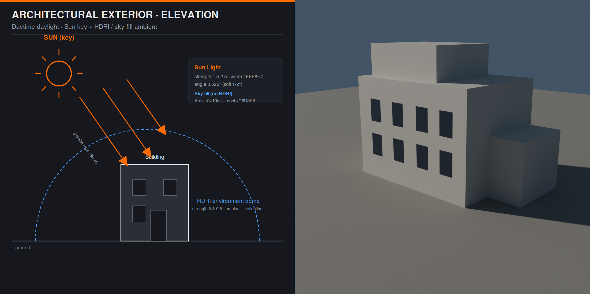
Scenario 3: Interior Room with Window Light
🪟 Natural Interior Lighting
Goal: Realistic interior lit by window with natural daylight
Setup:
- Window Area Light (Primary):
- Type: Area Light (Rectangle)
- Size: Match window dimensions (e.g., 2m x 3m)
- Position: At window location, pointing into room
- Rotation: Angled down 20-30° (sun angle through window)
- Power: 2000-5000W (strong daylight)
- Color: Slightly cool white (#F5F8FF) for outdoor light
- Purpose: Primary light source (sun through window)
- Sky Fill/Ambient:
- Type: Large Area Light (8m x 8m)
- Position: Outside window, farther back, angled down
- Power: 500-1000W
- Color: Cool blue (#D0E0F0) for diffused sky
- Purpose: General ambient, prevent pitch-black shadows
- Shadow: Disabled
- Bounce Light (Simulated GI):
- Type: Large Area Light (6m x 6m)
- Position: Low, on side opposite window (simulating floor/wall bounce)
- Power: 200-400W (very dim)
- Color: Warm based on room colors (beige/orange tint)
- Purpose: Simulate light bouncing off surfaces
- Shadow: Disabled
- Note: Cycles GI handles this automatically; this is for extra control
- Practical Lights (Optional):
- Type: Point or Spot lights
- Position: Inside lamp fixtures in scene
- Power: 50-200W (dim, supplementary)
- Color: Warm white (#FFF5E6)
- Purpose: Accent lighting, visible light sources
Pro tips:
- Window should be strongest light by far
- Directional light from window creates depth and interest
- Bounce/ambient prevents unrealistically dark shadows
- Add slight warm tint to bounce (reflects room materials)
- Can use multiple windows with separate Area lights each
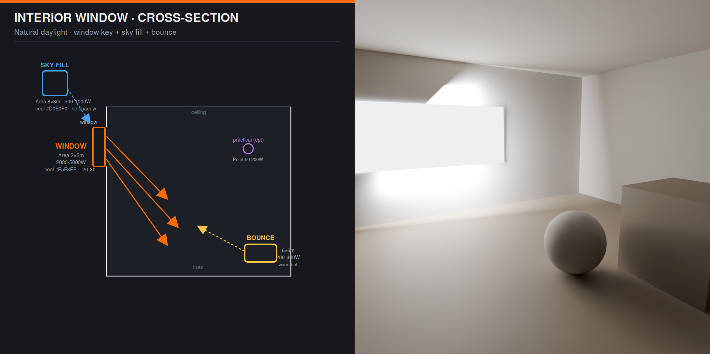
Scenario 4: Portrait/Character Lighting
👤 Classic Three-Point Portrait Setup
Goal: Flattering character lighting with dimension and separation
Setup:
- Key Light (Main):
- Type: Area Light (Rectangle or Square)
- Size: 4m x 4m (large for soft, flattering light)
- Position: 30-45° to side of face, slightly above eye level
- Distance: 2-3m from character
- Power: 1000-1500W
- Color: Neutral to slightly warm white
- Purpose: Primary facial modeling and definition
- Fill Light:
- Type: Area Light (Rectangle)
- Size: 5m x 5m (even larger than key for ultra-soft)
- Position: Opposite side from key, near camera height
- Distance: 2-3m from character
- Power: 400-600W (30-40% of key)
- Color: Match key or very slightly cooler
- Purpose: Soften shadows on face, reduce contrast
- Shadow: Disabled
- Specular: 0.3 (minimal highlights from fill)
- Rim/Hair Light:
- Type: Area Light (Rectangle, 1m x 3m strip) or Spot
- Position: Behind and above character, 45° from directly behind
- Aimed: At hair/shoulders (edge of character)
- Power: 600-1000W
- Color: White or slightly warm for golden edge
- Purpose: Separation from background, dimension, highlight hair
- Background Light (Optional):
- Type: Spot or Area Light
- Position: Behind character, aimed at background
- Power: 300-800W (creates gradient on background)
- Purpose: Background interest, prevent black void
Lighting ratio (key to fill):
- 2:1 ratio: Low contrast, very flattering (beauty, commercial)
- 3:1 ratio: Moderate contrast, classic portrait (standard)
- 4:1 or higher: High contrast, dramatic (film noir, moody)
Pro tips:
- Larger lights = more flattering (softer shadows)
- Key light should be main source of character definition
- Fill prevents unflattering harsh shadows
- Rim light is crucial for separation—don't skip it!
- Adjust key-fill ratio for different moods
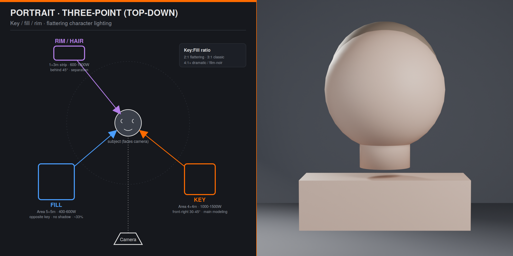
Scenario 5: Moody/Cinematic Night Scene
🌃 Dramatic Low-Key Lighting
Goal: Atmospheric, high-contrast night scene with selective illumination
Setup:
- Moonlight (Optional, Ambient):
- Type: Sun Light or Large Area
- Direction: High angle (moon overhead) or low (moon at horizon)
- Strength/Power: 0.3-0.5 (Sun) or 500-800W (Area)
- Color: Cool blue (#A0B8D0)
- Purpose: General ambient, subtle overall illumination
- Practical Light Source:
- Type: Spot Light or small Area
- Position: Streetlamp, window, flashlight, etc.
- Power: 800-2000W (strong, focused)
- Color: Warm orange (#FFB366) for sodium vapor, or cool for LED
- Spot Size: 40-60° if using Spot
- Purpose: Primary subject illumination, story element
- Rim/Separation Light:
- Type: Spot Light or Area
- Position: Behind subject, aimed at edges
- Power: 500-1000W
- Color: Cool blue (moonlight) or warm (fire/ambient)
- Purpose: Separate subject from dark background
- Minimal Fill (Very Subtle):
- Type: Large Area Light
- Position: Near camera, very far back or large
- Power: 100-200W (extremely dim)
- Color: Cool neutral
- Purpose: Just enough to see into shadows (barely)
- Shadow: Disabled
- Note: Can omit entirely for pure high-contrast look
Key principles for moody lighting:
- Embrace darkness: Large areas should be dark/black (high contrast)
- Selective illumination: Light only what matters (face, key objects)
- Motivated lighting: Every light should have visible source (lamp, window, fire)
- Color temperature contrast: Cool moonlight vs. warm practical lights
- Use shadows creatively: Shadows are as important as light
Pro tips:
- Use few lights (2-3 total) for dramatic simplicity
- Strong directional lighting creates drama
- Avoid fill light or use minimal—embrace shadows!
- Practical lights (visible in scene) add realism
- Color contrast (warm vs cool) enhances mood
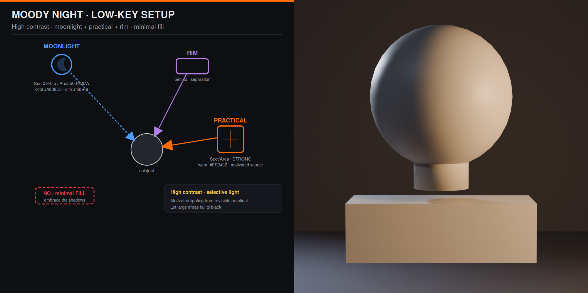
✅ Universal Lighting Setup Tips
- Start with one light: Add your key/main light first, get it right
- Build gradually: Add lights one at a time, testing after each
- Less is more: 3-5 well-placed lights beat 10 random ones
- Every light has purpose: Key, fill, rim, accent—know the role
- Test in Rendered view: Material Preview can be misleading
- Adjust ratios, not absolute values: Key-to-fill relationship matters more than specific watts
- Reference real photography: Study how photographers light similar subjects
- Iterate constantly: Lighting is never "done" on first try—keep refining!
🎯 Project: Light Type Showcase
Time to put your knowledge into practice! You'll create a comprehensive scene that demonstrates each light type and solidifies your understanding through hands-on experience.
🎨 Project Goal
Create a single scene with four objects, each lit primarily by a different light type, demonstrating the unique characteristics of Point, Sun, Spot, and Area lights.
Learning objectives:
- Practice adding and configuring all four light types
- Understand how each light type affects shadows and appearance
- Learn to position, aim, and adjust light properties
- Compare light types side-by-side
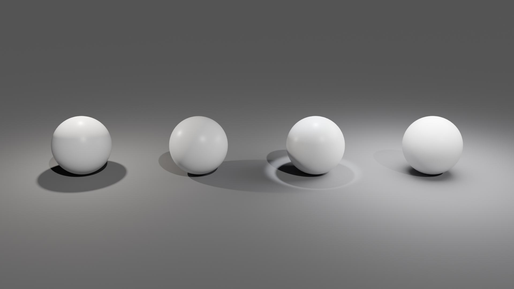
Step 1: Scene Setup
🎬 Prepare Your Scene
- Start fresh: File → New → General
- Delete default cube and light: Select (click) → X → Delete
- Add four spheres:
- Shift+A → Mesh → UV Sphere (repeat 4 times)
- Or duplicate: Add one sphere, Shift+D to duplicate 3 more
- Arrange in a row with spacing (G key to move)
- Spacing: About 4-5 Blender units between centers
- Add ground plane:
- Shift+A → Mesh → Plane
- Scale large: S → 20 → Enter
- Position below spheres (catches shadows)
- Position camera:
- Numpad 7 (top view) → Numpad 0 (camera view)
- N key → View → check "Camera to View"
- Navigate so all four spheres visible, angled view
- N key → uncheck "Camera to View" (lock camera)
- Switch to Rendered viewport:
- Top right of viewport: Click rightmost sphere icon
- Or press Z → Rendered
- Scene will be black (no lights yet—perfect!)
Step 2: Add Point Light
💡 Demonstrating Point Light
- Add Point light: Shift+A → Light → Point Light
- Position above first sphere:
- G key → Z → 3 (move up 3 units)
- Adjust X/Y to be centered over first sphere
- Configure in Properties:
- Select Point light → Light Properties (bulb icon)
- Power: 300W
- Color: Warm white (slightly yellow)
- Radius: 0.25m (default, hard shadows)
- Observe results:
- Note omnidirectional light spread
- Sharp shadow on ground directly below
- Gradual falloff with distance
- Optional experimentation:
- Try different Power values (100W, 500W, 1000W)
- Change Radius to 1.0m (softer shadows in Cycles)
- Move closer/farther to see falloff effect
Step 3: Add Sun Light
☀️ Demonstrating Sun Light
- Add Sun light: Shift+A → Light → Sun
- Position (anywhere is fine!):
- Remember: position doesn't matter for Sun
- Place it above second sphere for visual reference
- Rotate to aim at second sphere:
- R key → X → 45 (rotate 45° around X-axis)
- Adjust until light hits second sphere from angle
- Watch arrow on Sun icon (shows direction)
- Configure in Properties:
- Strength: 2.0
- Color: Neutral white or very slight warm
- Angle: 0.526° (realistic sun)
- Observe results:
- Parallel shadows (consistent direction)
- No falloff (even brightness across scene)
- Sharp, defined shadow edges
- All objects in scene receive light (not just sphere 2)
- Fix overexposure:
- If scene too bright overall, reduce Strength to 1.0-1.5
- Or increase Power on Point light to match
Step 4: Add Spot Light
🔦 Demonstrating Spot Light
- Add Spot light: Shift+A → Light → Spot Light
- Position above third sphere:
- G → Z → 4 (move up 4 units)
- Center over third sphere
- Rotate to aim down:
- Default orientation usually points down already
- If not: R → X → adjust until pointing at sphere
- Enable "Show Cone" in Light Properties → Viewport Display
- Configure in Properties:
- Power: 500W
- Spot Size: 50° (moderate cone)
- Blend: 0.4 (moderate softness)
- Radius: 0.3m
- Color: Cool white (slightly blue)
- Observe results:
- Circular pool of light on ground
- Defined beam with falloff at edges
- Directional light (only lights in cone)
- Shadow confined to lit area
- Experiment:
- Spot Size: Try 20° (narrow) and 80° (wide)
- Blend: Try 0.0 (hard edge) and 1.0 (very soft)
- Rotate slightly to see beam direction change
Step 5: Add Area Light
⬜ Demonstrating Area Light
- Add Area light: Shift+A → Light → Area Light
- Position above fourth sphere:
- G → Z → 3 (move up 3 units)
- Center over fourth sphere
- Rotate to aim down:
- R → X → 90 (if needed to point straight down)
- Default may already be correct
- Check wireframe orientation in viewport
- Scale to large size:
- S → 3 → Enter (scale to 3m x 3m)
- Or set Size in Properties: 3m
- Configure in Properties:
- Shape: Square or Rectangle
- Size: 3m (or 3m x 3m for Rectangle)
- Power: 800W
- Color: Neutral white
- Observe results:
- Soft, gradual shadow edges (most realistic!)
- Even, flattering illumination
- Natural appearance compared to other lights
- Experiment with size:
- Size 1m: Harder shadows
- Size 5m: Ultra-soft shadows
- Compare shadow softness to other light types!
Step 6: Fine-Tune and Compare
🎨 Refinement and Analysis
- Balance brightness:
- All four spheres should be similarly bright
- Adjust Power values to balance
- Goal: Each light shows its characteristics without being too dim/bright
- Check shadows:
- Point: Sharp shadow directly below
- Sun: Parallel shadow in one direction (all objects same direction)
- Spot: Shadow within light cone only
- Area: Soft, gradual shadow
- Add materials (optional enhancement):
- Select each sphere → Material Properties → New
- Adjust Roughness: 0.2-0.4 (semi-glossy)
- Metallic: 0.0 (or try 1.0 for metal sphere)
- See how different lights affect specular highlights
- Label your lights:
- Select each light → Properties → Object Properties
- Rename: "Point_Light", "Sun_Light", "Spot_Light", "Area_Light"
- Good organization habit!
- Test render:
- F12 to render final image
- Image → Save As → save your result
- Compare to viewport (should be similar if using Cycles/Eevee consistently)
✅ Project Success Checklist
Your project is complete when:
- ✅ Four spheres in scene, each primarily lit by different light type
- ✅ Point light: Shows omnidirectional spread and hard shadows
- ✅ Sun light: Shows parallel rays and consistent directional lighting
- ✅ Spot light: Shows focused cone beam and controlled direction
- ✅ Area light: Shows soft shadows and realistic illumination
- ✅ All lights properly positioned, aimed, and configured
- ✅ Brightness roughly balanced across all four objects
- ✅ You understand why each light behaves differently
- ✅ Scene saved and final render created
Bonus Challenges
🌟 Take It Further (Optional)
If you want extra practice:
- Color experimentation:
- Give each light a different color (warm/cool)
- See how colored lights affect material appearance
- Create complementary color schemes
- Shadow comparison:
- Create second scene with only ground plane + one object
- Test same light type with different settings
- E.g., Area light: 1m, 3m, 5m, 10m sizes—compare shadows
- Complex object test:
- Replace spheres with Suzanne monkey heads
- More complex geometry shows light behavior better
- Notice how shadows reveal form
- Animation:
- Animate light positions/rotations
- Keyframe Power to pulse lights on/off
- Render short animation showing light behavior
- Three-point setup:
- Create new scene with single character/object
- Implement classic three-point lighting
- Practice key + fill + rim workflow
🎓 Lesson Summary
What You've Learned
Congratulations! You've completed a comprehensive exploration of lighting in Blender. Lighting is one of the most powerful tools in your 3D toolkit, and you now have the knowledge to create professional, compelling illumination for any scene.
Key concepts mastered:
- Why lighting matters: How light creates mood, depth, focus, and realism
- Light fundamentals: Power, falloff, color temperature, hard vs. soft light
- Point lights: Omnidirectional illumination for small sources
- Sun lights: Parallel rays for outdoor and distant lighting
- Spot lights: Focused cone beams for theatrical and controlled lighting
- Area lights: Soft, realistic illumination for professional results
- Light properties: Diffuse/specular, shadows, volume, custom distance
- Practical scenarios: Real-world lighting setups for common situations
Skills you can now do:
- ✨ Choose the right light type for any scenario
- 🎨 Create professional three-point lighting setups
- ☀️ Light outdoor architectural scenes realistically
- 💡 Configure light properties for desired effects
- 🎯 Control shadow softness and quality
- 🔦 Aim and position lights effectively
- ⚖️ Balance multiple lights in complex scenes
- 🎭 Create mood and atmosphere through lighting choices
The Four Light Types: Quick Reference
💡 Point Light:
- Use for: Candles, small bulbs, particles, accent lights
- Characteristics: Omnidirectional, hard shadows, inverse square falloff
- Pro tip: Great for quick placeholder lighting while modeling
☀️ Sun Light:
- Use for: Outdoor scenes, distant directional light, daylight
- Characteristics: Parallel rays, no falloff, position irrelevant
- Pro tip: Combine with HDRI for most realistic outdoor lighting
🔦 Spot Light:
- Use for: Theatrical lighting, flashlights, focused highlights
- Characteristics: Cone-shaped beam, adjustable angle, directional
- Pro tip: Enable "Show Cone" for easier aiming in viewport
⬜ Area Light:
- Use for: Studio lighting, portraits, realistic illumination
- Characteristics: Soft shadows, physical size, most versatile
- Pro tip: Larger = softer shadows. Don't be afraid to go huge (5m-10m+)!
The Lighting Decision Framework
"What story does this scene tell, and what lighting supports that story?"
Ask yourself these questions:
- Where does this scene take place?
- Outdoors → Sun light + environment
- Indoors → Area lights (windows) + practical lights
- Studio/product → Area lights in three-point setup
- What time is it?
- Day → Bright, warm/neutral sun
- Golden hour → Low angle, warm orange sun
- Night → Cool moonlight, practical light sources
- What's the mood?
- Bright & positive → High key, soft fill, warm colors
- Dramatic & moody → High contrast, minimal fill, directional
- Mysterious & dark → Low key, cool colors, selective lighting
- What needs emphasis?
- Hero object → Strongest light on it (key light)
- Background → Separate light or let fall into shadow
- Texture/detail → Side lighting to reveal form
- What's realistic for this scene?
- Where would light actually come from?
- Windows, lamps, sky, sun—visible sources
- Motivated lighting = believable lighting
💡 The Three Fundamental Lighting Truths
1. Bigger light sources = softer shadows
- This is physics, not preference
- Large Area lights (3m+) create beautiful, realistic shadows
- Point lights create harsh shadows because they're infinitely small
- Closer light = relatively bigger = softer (even if actual size unchanged)
2. Every light should have a purpose
- Key light: Main illumination and modeling
- Fill light: Soften shadows without competing
- Rim light: Separation and edge definition
- Accent light: Draw attention to specific elements
- Background light: Separate subject from backdrop
- If you can't name a light's purpose, delete it
3. Less is almost always more
- 3-5 well-placed lights beat 10 random ones
- More lights = more complexity = harder to control
- Start with one light, add only when truly needed
- Simplicity creates clarity and impact
Common Lighting Mistakes to Avoid
❌ Using only Point lights:
- Hard shadows rarely look realistic
- Area lights are almost always better for main lighting
- Reserve Point lights for specific small sources
❌ Too many lights without purpose:
- Creates competing shadows and confusion
- Harder to control and balance
- Longer render times with no benefit
❌ Ignoring shadow quality:
- Shadows reveal depth and form—they matter!
- Pay attention to shadow softness, direction, intensity
- Unrealistic shadows destroy believability
❌ Flat, front-only lighting:
- Light from camera position = flat, boring
- Use 30-45° angles for dimension
- Side and back lights create depth
❌ Wrong color temperature:
- Cool light for sunset (should be warm)
- Warm light for night (should be cool)
- Match color to time of day and light source type
❌ Forgetting the background:
- Subject floating in black void looks amateurish
- Add background light or environment
- Separation between subject and background is key
❌ Not testing render early:
- Viewport preview can be misleading
- Test render (F12) frequently as you light
- What looks good in viewport may not render well
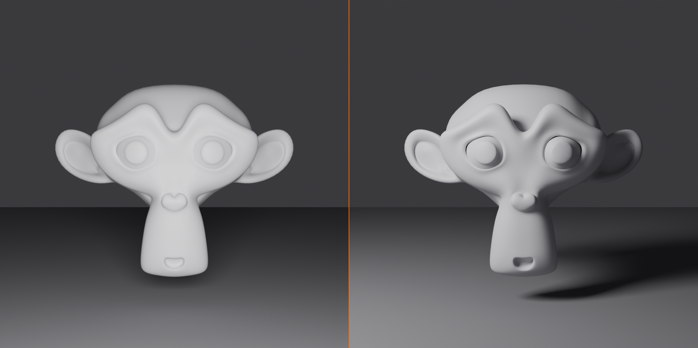
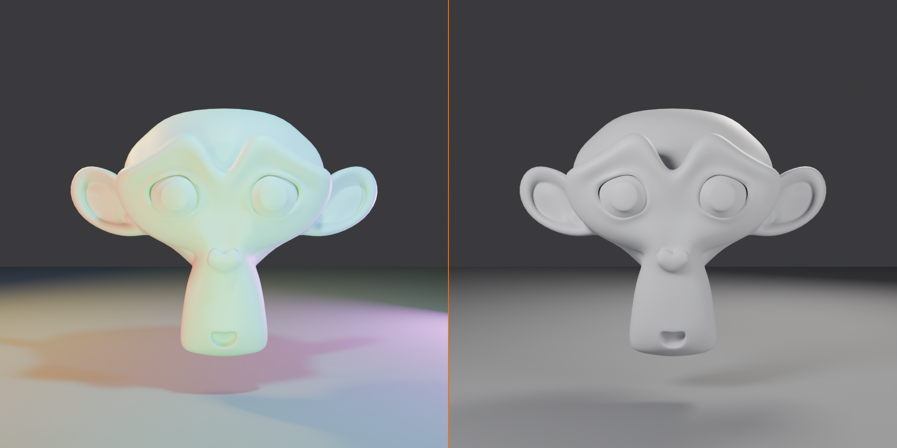
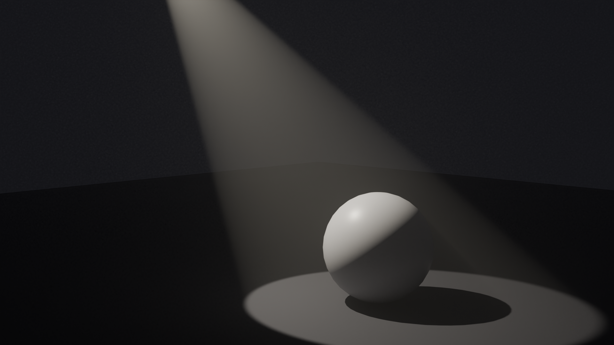
Next Steps in Your Lighting Journey
Immediate practice:
- Light at least 5 different scenes using what you've learned
- Try each lighting scenario from the lesson (product, portrait, etc.)
- Experiment with extreme settings to understand boundaries
- Compare your renders to reference photographs
Study real-world lighting:
- Look at professional photography—where are the lights?
- Watch films with attention to lighting (cinematography)
- Visit museums—study how paintings use light and shadow
- Observe the real world: time of day, weather, indoor/outdoor
Build a lighting reference library:
- Save images of lighting setups you like
- Screenshot your successful Blender lighting setups
- Note power, position, and settings for future reference
- Create lighting templates you can reuse
What's Next?
You've mastered the fundamentals of light types! Now you're ready to learn professional lighting techniques and advanced workflows.
Coming up in the rest of Module 4:
- Lesson 16: Three-Point Lighting Setup
- Master the classic cinematography technique
- Key, fill, and rim light relationships
- Lighting ratios and contrast control
- Variations for different moods and styles
- Lesson 17: HDRI and World Lighting
- Image-based lighting with HDRIs
- Realistic environment lighting
- Combining HDRI with manual lights
- Creating and using custom environments
- Lesson 18: Eevee Real-time Rendering
- Fast, interactive render engine
- Eevee-specific lighting settings
- Optimization for real-time performance
- When to use Eevee vs. Cycles
- Lesson 19: Cycles Path Tracing
- Photorealistic rendering
- Global illumination and light bounces
- Cycles-specific features and optimization
- Achieving maximum realism
With solid understanding of light types, you're ready to tackle advanced lighting techniques that will make your renders truly professional!
🎉 Excellent Work!
You've taken a huge step forward in your Blender journey. Lighting separates amateur work from professional results, and you now have the knowledge to create compelling, beautiful illumination.
Remember the golden rules:
- 🌟 Start simple—one light at a time
- 📏 Bigger lights = softer shadows = more realistic
- 🎯 Every light needs a purpose
- 🎨 Less is more—quality over quantity
- 👁️ Study the real world constantly
- 🔄 Iterate and experiment—lighting is never "done"
Lighting is both a technical skill and an art form. The technical knowledge you've gained today provides the foundation, but artistry comes with practice. Keep experimenting, keep observing, and keep learning!
Now go forth and light your worlds beautifully! 💡